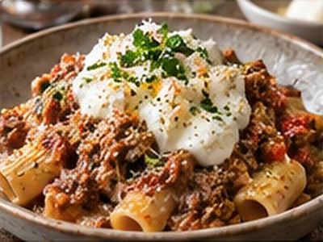

← Back to all recipes
PASTA · ITALIAN
Rigatoni with Pork Ragù and Fresh Ricotta
Slow-simmered pork ragù tossed with rigatoni and finished with cool, creamy fresh ricotta.
2 hrServes 4

Ingredients
- 1 lb ground pork
- 2 tbsp olive oil
- 1 onion, 1 carrot, and 1 celery stalk, finely diced
- 3 garlic cloves
- ½ cup red wine
- 1 can (28 oz) crushed tomatoes
- 12 oz rigatoni
- 1 cup fresh ricotta
- Parmigiano
- Salt and pepper
Preparation
- Brown pork in olive oil; add vegetables and garlic and cook until soft.
- Add wine and reduce by half. Add tomatoes and simmer 60–90 minutes.
- Cook rigatoni al dente and toss with ragù.
- Serve with spoonfuls of fresh ricotta and Parmigiano.